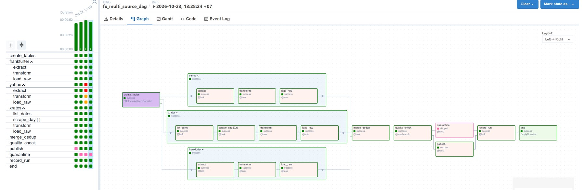
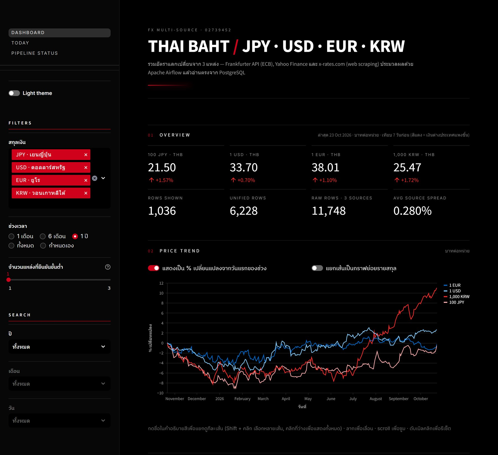
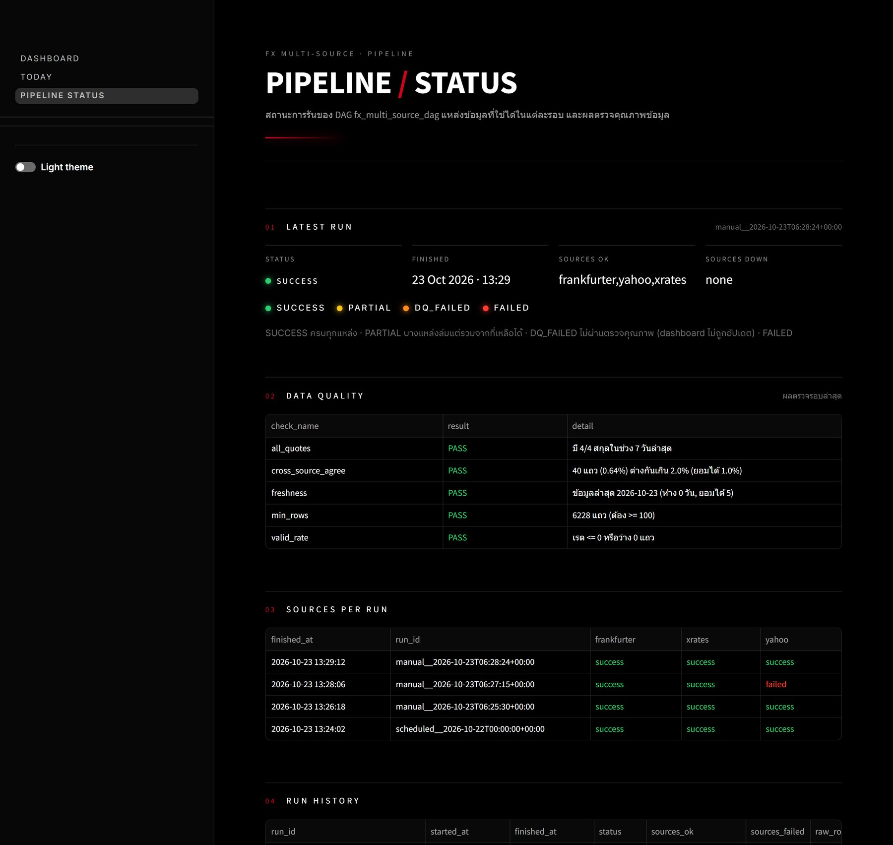
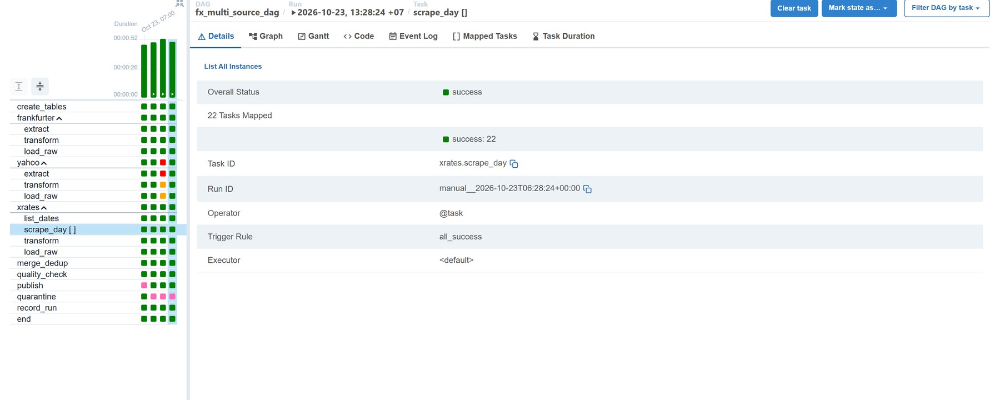

| ระดับ | สิ่งที่ทำ (อ้างอิงใน dags/fx_multi_source_dag.py, web/) | ผล |
|---|---|---|
| 1 ขั้นต่ำ | DAG แบบ extract → transform → load ลง PostgreSQL และเว็บ Streamlit แสดงตารางและกราฟเส้น โดยอ่านจาก PostgreSQL ตรงด้วย psycopg2 | ครบ |
| 2 มาตรฐาน | 3 แหล่งรันขนานกันใน TaskGroup frankfurter / yahoo / xrates แปลงทุกแหล่งให้อยู่ใน schema เดียวกัน (fx_rates_raw) ใช้ INSERT … ON CONFLICT DO UPDATE โดย PK = (source, date, base, quote) รันซ้ำ 4 รอบแล้วจำนวนแถวยังคง 11,748 แถวเท่าเดิม เว็บมี KPI 8 ตัว และตัวกรองสกุล, ช่วงเวลา และจำนวนแหล่งที่ยืนยัน | ครบ |
| 3 ท้าทาย | แหล่งที่ 3 เป็น web scraping จาก x-rates.com (requests + BeautifulSoup ไม่ใช้ Selenium) ส่วน merge_dedup ตั้ง trigger_rule=all_done จึงรวมข้อมูลจากแหล่งที่เหลือได้เมื่อมีแหล่งล่ม (ทดสอบด้วย simulate_down=yahoo แล้ว DAG ยัง success สถานะเป็น PARTIAL ดู Grid view ในภาพที่ 4) ตัดรายการซ้ำข้ามแหล่งด้วย GROUP BY (วัน, สกุล) ใช้ค่ามัธยฐาน ทำให้ 11,748 แถวเหลือ 6,228 แถว จากนั้น quality_check (@task.branch) ตรวจ 5 ข้อ ถ้าผ่านไป publish ถ้าไม่ผ่านไป quarantine | ครบ |
| โบนัส | มีหน้า Pipeline Status บนเว็บ (สถานะรายรอบ, รายแหล่ง, ผล DQ) และใช้ Dynamic Task Mapping กับ scrape_day.expand() (22 วัน) · เพิ่มเติม: หน้า Today สรุปเรตล่าสุดและกราฟถูก/แพงกว่าค่าเฉลี่ย 90 วัน, ค้นหาปี/เดือน/วัน แล้วกราฟ zoom ไปที่ช่วงนั้น (ค้นผ่านลิงก์ ?year=&month=&day= ได้), กด legend เพื่อแยกดูทีละเส้น และสลับธีมดำ/ขาวได้ | ครบ |
แหล่งข้อมูล: (1) Frankfurter API ข้อมูล ECB 6,148 แถว · (2) Yahoo Finance chart JSON 5,512 แถว · (3) x-rates.com scrape 30 วันล่าสุด 88 แถว
รวมข้อมูลดิบ 11,748 แถว และหลังตัดซ้ำเหลือ 6,228 แถว (เกณฑ์ขั้นต่ำ 100 แถว)
robots.txt ของ x-rates อนุญาต /historical/ ระบบหน่วงเวลา 1 วินาทีต่อ request และทำงานพร้อมกันได้ไม่เกิน 2 task ข้อมูลทั้งหมดไม่มีข้อมูลส่วนบุคคล (PDPA)
รันระบบด้วย cp .env.example .env แล้ว docker compose up -d --build จากนั้น DAG จะรันรอบแรกเองอัตโนมัติ ใช้เวลาประมาณ 50 วินาที



ปัญหา 1 ข้อมูล Yahoo วันจันทร์เพี้ยน ทำให้รอบแรกไม่ผ่าน quality check
อาการ: DAG รอบแรกไปทาง quarantine เพราะข้อ cross_source_agree ไม่ผ่าน มี 77 แถว (1.23%) ที่ Yahoo ต่างจาก Frankfurter เกิน 2% และ dashboard ไม่ถูกอัปเดต
หาสาเหตุ: query fx_rates WHERE spread_pct > 2 พบว่าเกือบทั้งหมดเป็นวันจันทร์ จึงเปิด JSON ดิบของ Yahoo มาเทียบ พบว่าแท่งราคาประทับเวลา 23:00 UTC คืนวันอาทิตย์ (ช่วงตลาดเพิ่งเปิด สภาพคล่องต่ำ เช่น EUR/THB 36.50 ขณะที่ค่าจริงอยู่ราว 37.6) แต่โค้ดแปลงเวลาเป็น timezone ลอนดอน แท่งนี้จึงกลายเป็นวันจันทร์
วิธีแก้: เปลี่ยนไปใช้วันที่แบบ UTC แล้วตัดแท่งเสาร์-อาทิตย์ทิ้ง ล้างข้อมูล Yahoo เก่าแล้วรันใหม่ แถวที่ต่างกันเกิน 2% ลดเหลือ 0.64% ผ่านเกณฑ์ และระบบ publish ได้ตามปกติ (commit 43e11eb) ปัญหานี้แสดงว่า branch ตรวจคุณภาพกันข้อมูลผิดไม่ให้ขึ้น dashboard ได้จริง
ปัญหา 2 หน้าเว็บ x-rates แสดงวันที่ไม่ตรงกับข้อมูล และวันเดียวพังอาจลากทั้งแหล่งพัง
อาการ: ตอนทดลอง scrape ข้อความ ratesTimestamp ในหน้าเว็บขึ้น "Jan 01, 2026" ทุกวันที่ที่ขอ แต่ตัวเลขเรตเปลี่ยนไปตามวันจริง ถ้าอ่านวันที่จากหน้าเว็บ ข้อมูลทุกวันจะชนกันเป็นวันเดียว
หาสาเหตุ: ใช้ curl ดึงหลายวันมาเทียบกัน (2025-12-15, 2026-03-10, 2026-10-21) แล้วเทียบเรตกับ Yahoo และ Frankfurter พบว่าค่าเรตถูกต้องตามวันที่ใน URL ส่วนข้อความวันที่ในหน้าเป็นค่าที่ผิด
วิธีแก้: ใช้วันที่จากพารามิเตอร์ date= ใน URL แทนข้อความในหน้า เลือกเซลล์จากลิงก์ to=JPY/USD/EUR/KRW ด้วย BeautifulSoup และให้ scrape_day แต่ละวันจับ error ของตัวเองแล้วคืนลิสต์ว่าง ถ้าเกิด error ทุกวันจึงค่อยถือว่าแหล่งนี้ล่ม (ไปทาง trigger rule ของ merge)
ปัญหา 3 ธีมขาวแสดงผลเพี้ยน: พื้นขาวแต่ตัวหนังสือขาว ส่วนกราฟและช่องเลือกยังเป็นสีดำ
อาการ: กด Light theme แล้ว CSS ที่เขียนเองเปลี่ยนเป็นพื้นขาว แต่ label เป็นตัวอักษรขาวจนมองไม่เห็น ส่วนกราฟ, multiselect และตารางยังเป็นธีมมืด และผลบนเบราว์เซอร์แต่ละเครื่องไม่เหมือนกัน
หาสาเหตุ: เทียบผลระหว่างหน้าต่างเก่าที่เปิดค้างไว้กับ session ใหม่ แล้ว inspect DOM ของ widget พบว่าวิธีแรกไปแก้ theme.* ฝั่ง server ซึ่งใช้ร่วมกันทุกหน้าต่าง Streamlit ส่งค่าธีมให้หน้าเว็บเฉพาะตอนเริ่ม session และเบราว์เซอร์ยังจำธีมเดิมไว้ ธีมจึงไม่ตรงกันระหว่าง CSS กับ widget
วิธีแก้: เลิกแก้ธีมฝั่ง server แล้วเก็บโหมดใน st.session_state แยกต่อหน้าต่าง ทำธีมขาวด้วย CSS ที่ระบุ selector ของ widget โดยตรง (select, radio, toggle) ตั้งค่ากราฟ Altair เองด้วย theme=None และ configure_axis ตามโหมด และล็อกสีเส้นแต่ละสกุลด้วย alt.Scale(domain, range) ให้สีเส้นเหมือนเดิมทั้งสองธีม นอกจากนี้ตอนเปลี่ยนหน้าธีมเด้งกลับเป็นดำ เพราะ Streamlit ล้างค่า widget ที่ไม่อยู่ในหน้าใหม่ จึงย้ายไปเก็บโหมดในคีย์ธรรมดาของ session_state แล้วใช้ on_change อัปเดตแทน
หลักที่ใช้: ทำให้ ระบบรันได้ครบ end-to-end เร็วที่สุด แล้ว commit/push ทันที เพราะระบบนับเฉพาะ commit ก่อน 16:00 น. และอาจารย์จะรันจาก repo จากนั้นค่อยเพิ่มระดับ 2 → 3 → โบนัส → ความสวยงาม และเผื่อเวลาท้ายไว้ทดสอบ clone ใหม่
| ช่วงเวลา | งาน | ผลลัพธ์ / เหตุผล |
|---|---|---|
| 13:00–13:20 | อ่านโจทย์ ทดสอบแหล่งข้อมูลด้วย curl (Frankfurter, Yahoo, x-rates) อ่าน robots.txt ตรวจพอร์ตที่ว่าง และ pull image ของ Airflow ไว้ล่วงหน้า | ตรวจก่อนเขียนโค้ดว่าทุกแหล่งดึงได้จริงและถูกกติกา |
| 13:20–13:25 | docker-compose.yml (LocalExecutor), .env.example, .gitignore และ DAG ครบ 3 แหล่ง (TaskGroup, UPSERT, dedup, branch, mapping) | ออกแบบโครงระดับ 3 ไว้ตั้งแต่แรก จะได้ไม่ต้องรื้อทีหลัง |
| 13:25–13:30 | Dashboard ตัวแรก รันระบบจริง แล้ว commit + push ครั้งแรก | มีงานที่ส่งได้แล้วตั้งแต่ช่วงต้น |
| 13:30–13:35 | แก้ปัญหา Yahoo (ปัญหา 1) ทดสอบ simulate_down และรันซ้ำเพื่อตรวจ UPSERT แล้วเขียน README | พิสูจน์ระดับ 2–3 ด้วยผลรันจริง |
| 13:35–13:55 | ปรับดีไซน์ dashboard (โทนมินิมอล ดำ/ขาว), หน้า Pipeline Status, สวิตช์ธีม, แท็กตัวกรองกว้างเท่ากัน, หน้า Today, ค้นหาปี/เดือน/วันพร้อม zoom กราฟ และแยกเส้นกราฟ | ทำโบนัสหลังงานหลักเสร็จแล้ว |
| 13:55–14:15 | ถ่ายภาพ Graph/Grid/Dashboard แล้วทำไฟล์ PDF สรุป | 35 คะแนนของ PDF |
| 14:15–16:00 | ทดสอบ clone repo ใหม่ลงโฟลเดอร์ว่างแล้วรันตาม README, ตรวจว่าไม่มีรหัสผ่านใน git, commit สุดท้าย และส่งงาน | เวลาสำรอง กันกรณีอาจารย์รันไม่ได้ |
xrates_days ส่วนข้อมูลย้อนหลังยาวใช้ 2 API แทน.env.exampleAIRFLOW_CONN_POSTGRES_TARGET)